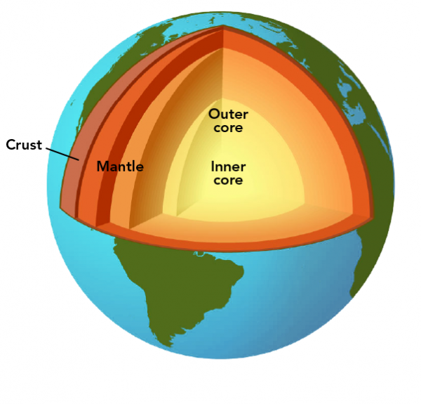

A tabela a seguir detalha os eventos da história da terra
| imagem | Período | Descrição |
|---|---|---|
| Início | Período Inicial do planeta terra, onde a formação resultou em uma rocha de magma quente | |
| Período Pangeia | Neste período, havia o supercontinente pangeia, sendo a junção de várias camadas de terra devido ás arividades tectônicas |
|
| Período de Glaciação | Período denominado "Terra Bola de Neve", no qual fenômenos naturais de mudança climática resultaram no resfriamento do planeta e o congelamento da maior parte dos oceanos |
|
| Periodo atual | O clima do planeta está relativamente estabilizado, no qual formas de vida se encontram diversas e começam vários períodos, inclusive a ascenção dos hominídeos |
Este parágrafo retrata acontecimentos específicos sobre a formação do planeta, tais como os tipos de minerais disponíveis em cada período, particularidades em relação a outros planetas e fatores que tornaram a vida possível no período atual. Esta seção também pode conter curiosidades sobre o planeta e o que o destaca no Sistema Solar
Mostrarei uma breve definição sobre as camadas presentes no planeta terra, além de algum exemplo e introdução ao tópico para aqueles que não conhecem
""A crosta terrestre é a camada mais superficial e de menor espessura do planeta Terra, e pode ser chamada também de litosfera. Esse nome foi atribuído graças à estrutura essencialmente rochosa da crosta, constituída por rochas em seu estado sólido. Trata-se da camada sobre a qual se desenvolvem os recursos naturais, a vida animal e vegetal e as atividades humanas.
Apesar de demonstrar certa estabilidade se comparada às demais camadas, a litosfera apresenta elevado dinamismo e sofre alterações provocadas tanto pelos agentes exógenos (externos) quanto pelos agentes endógenos, que são as forças internas do planeta Terra, resultantes dos movimentos característicos das camadas inferiores, em particular do manto."
A Crosta Terrestre pode ser dividida em duas partes:
"A litosfera não é uma camada contínua. Ela é formada por grandes blocos rochosos que são as placas tectônicas. Em função das correntes de convecção que acontecem no manto terrestre, as placas se movimentam (tectonismo) de forma convergente ou divergente, dando origem a formas como montanhas e fossas oceânicas, além das erupções vulcânicas e fenômenos como terremotos, maremotos e tsunamis."
"Entre a crosta terrestre e a camada inferior, o manto terrestre, está a descontinuidade de Mohorovičić, compreendida como a fronteira entre essas duas camadas. A descontinuidade de Mohorovičić é caracterizada pela variação brusca da velocidade das ondas sísmicas, que aumentam sua velocidade ao passarem por essa camada."
"O manto terrestre é a camada intermediária do interior da Terra. Ela fica situada entre a crosta terrestre e o núcleo, iniciando a partir de 100 km de profundidade contados a partir da superfície. A espessura total do manto pode chegar a 2900 km, dividindo-se em duas partes, manto superior e manto inferior. Em algumas fontes é possível encontrar ainda uma nova subdivisão, que é o manto intermediário ou transicional."
"Devido às elevadas temperaturas, que chegam a 2000 °C, o manto é formado por material pastoso (viscoso), mais conhecido como magma, e líquido. O manto é constituído por silício, ferro e magnésio. Quando o material mantélico ascende até a superfície por meio do vulcanismo, seja por derrames oceânicos ou pela erupção de vulcões terrestres, ele resfria e dá origem às rochas magmáticas ou ígneas."
"Entre o manto terrestre e a camada inferior, o núcleo terrestre, está a descontinuidade de Gutenberg. Nela, as ondas sísmicas S não são propagadas, uma vez que elas não se propagam em meios líquidos e aquosos, e as ondas sísmicas P, que se propagam em todos os meios, possuem redução de velocidade."
"O núcleo terrestre é a camada mais interna da Terra, situada abaixo do manto inferior. De formato esférico, o núcleo apresenta diâmetro de aproximadamente 3480 km, com profundidades de até 6380 km, e corresponde à camada de maior densidade do planeta: 10,6 g/cm³. A elevada densidade do núcleo terrestre é atribuída à sua composição química, que consiste em uma liga metálica que se acredita ser formada por níquel e ferro. As temperaturas no núcleo podem superar os 5000 °C."
"O núcleo é dividido em duas partes:"